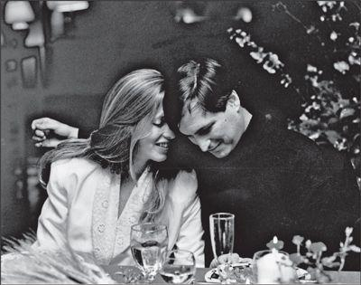

With Laurene Powell, 1991
By this point, based on his dating history, a matchmaker could have put together a composite sketch of the woman who would be right for Jobs. Smart, yet unpretentious. Tough enough to stand up to him, yet Zen-like enough to rise above turmoil. Well-educated and independent, yet ready to make accommodations for him and a family. Down-to-earth, but with a touch of the ethereal. Savvy enough to know how to manage him, but secure enough to not always need to. And it wouldn’t hurt to be a beautiful, lanky blonde with an easy-going sense of humor who liked organic vegetarian food. In October 1989, after his split with Tina Redse, just such a woman walked into his life.
根据乔布斯的恋爱史，做红娘的应该可以大概勾勒出适合乔布斯的女人了。聪明，而不自负。足够刚强能承受跟他在一起的压力，又足够超脱能免于争端。受过良好教育，独立，又愿意为他和家庭而作出改变。能适应现实，却又带着点儿超凡脱俗。足够世故知道怎么管理他，又有足够的安全感不用总是管着他。当然最好还是个漂亮苗条的金发美女，平易近人，有幽默感，喜欢有机素食。1989年10月，乔布斯跟蒂娜·莱德斯分手后，刚好有这样一个女人走进了他的生活。
More specifically, just such a woman walked into his classroom. Jobs had agreed to give one of the “View from the Top” lectures at the Stanford Business School one Thursday evening. Laurene Powell was a new graduate student at the business school, and a guy in her class talked her into going to the lecture. They arrived late and all the seats were taken, so they sat in the aisle. When an usher told them they had to move, Powell took her friend down to the front row and commandeered two of the reserved seats there. Jobs was led to the one next to her when he arrived. “I looked to my right, and there was a beautiful girl there, so we started chatting while I was waiting to be introduced,” Jobs recalled. They bantered a bit, and Laurene joked that she was sitting there because she had won a raffle, and the prize was that he got to take her to dinner. “He was so adorable,” she later said.
更准确地说，是刚好有这样一个女人走进了他的课堂。乔布斯同意在斯坦福商学院的“高屋建瓴”系列讲座中讲一场。那是个周四的晚上。劳伦·鲍威尔是商学院的新研究生，她班里的一个同学拉她去听这个讲座。他们到晚了，所有的位子都满了，所以他们坐在过道上。后来有人过来说他们不能坐在那儿，鲍威尔就带着她的朋友径直走到第一排，坐在了两个预留座位上。乔布斯到场后，被引导到她旁边的座位。“我向右侧一看，一个美女坐在那儿，在我等着被介绍时我们就聊了起来。”乔布斯回忆道。他们调侃了几句，劳伦开玩笑说她坐在那儿是因为她中了彩票，奖品是他带她去吃晚饭。“他太可爱了。”她后来说。
After the speech Jobs hung around on the edge of the stage chatting with students. He watched Powell leave, then come back and stand at the edge of the crowd, then leave again. He bolted out after her, brushing past the dean, who was trying to grab him for a conversation. After catching up with her in the parking lot, he said, “Excuse me, wasn’t there something about a raffle you won, that I’m supposed to take you to dinner?” She laughed. “How about Saturday?” he asked. She agreed and wrote down her number. Jobs headed to his car to drive up to the Thomas Fogarty winery in the Santa Cruz mountains above Woodside, where the NeXT education sales group was holding a dinner. But he suddenly stopped and turned around. “I thought, wow, I’d rather have dinner with her than the education group, so I ran back to her car and said ‘How about dinner tonight?’” She said yes. It was a beautiful fall evening, and they walked into Palo Alto to a funky vegetarian restaurant, St. Michael’s Alley, and ended up staying there for four hours. “We’ve been together ever since,” he said.
演讲结束后，乔布斯在讲台边跟学生们聊天。他看到鲍威尔离开，然后又回来了，站在人群外围，后来又走了。他冲出去追她，商学院院长都没能抓住他说几句话。他在停车场追上她说，“不好意思，不是说你赢了彩票，我应该请你吃饭吗？”她大笑。“周六怎么样？”他问。她同意了，给他留了她的联系方式。乔布斯要开车去伍德赛德那边圣克鲁兹山的托马斯·福格蒂酒庄，出席NeXT教育销售团队的晚宴。走到一半，他突然转身回来了。“我想，哇，跟教育团队相比，我更愿意跟她一起吃饭，所以我跑回到她的车旁，问她今晚就一起吃饭怎么样。”她说好。那是一个美丽的秋夜，他们走到帕洛奥图的一家时髦的素食餐厅圣迈克尔巷（St.Michael-sAlley），结果在那待了四个小时。“从那儿以后我们就一直在一起了。”他说。
Avie Tevanian was sitting at the winery restaurant waiting with the rest of the NeXT education group. “Steve was sometimes unreliable, but when I talked to him I realized that something special had come up,” he said. As soon as Powell got home, after midnight, she called her close friend Kathryn (Kat) Smith, who was at Berkeley, and left a message on her machine. “You will not believe what just happened to me!” it said. “You will not believe who I met!” Smith called back the next morning and heard the tale. “We had known about Steve, and he was a person of interest to us, because we were business students,” she recalled.
阿维·泰瓦尼安坐在酒庄的餐厅，与NeXT教育销售团队的其他人一起等着乔布斯。“史蒂夫有时候是不靠谱，但是我跟他通话的时候，就意识到确有什么特别的事情发生了。”他说。午夜之后，鲍威尔一到家，就给她最好的朋友、当时在伯克利读书的凯瑟琳（凯特）·史密斯〖Kathryn（Kat）Smith〗打电话，在她的答录机上留言说：“你不会相信我刚才碰上了什么事！你不会相信我遇到谁了！”史密斯第二天早上回电话，了解了事情的经过。“我们之前就知道史蒂夫，他是我们感兴趣的人，因为我们是商科学生。”她回忆说。
Andy Hertzfeld and a few others later speculated that Powell had been scheming to meet Jobs. “Laurene is nice, but she can be calculating, and I think she targeted him from the beginning,” Hertzfeld said. “Her college roommate told me that Laurene had magazine covers of Steve and vowed she was going to meet him. If it’s true that Steve was manipulated, there is a fair amount of irony there.” But Powell later insisted that this wasn’t the case. She went only because her friend wanted to go, and she was slightly confused as to who they were going to see. “I knew that Steve Jobs was the speaker, but the face I thought of was that of Bill Gates,” she recalled. “I had them mixed up. This was 1989. He was working at NeXT, and he was not that big of a deal to me. I wasn’t that enthused, but my friend was, so we went.”
安迪·赫茨菲尔德等人后来推测，鲍威尔是有意安排了跟乔布斯的相遇。“劳伦人很好，但是她可能会算计，我想她一开始就锁定了他。”赫茨菲尔德说，“她的大学室友告诉我，劳伦收集有史蒂夫的杂志封面，发誓说她一定会遇到他。如果史蒂夫真的被算计了，可真够讽刺的。”但是劳伦后来坚持说不是那么回事。她去参加那个讲座只是因为她的朋友想去，而且她都有点儿搞不清要见的人长什么样。“我知道演讲人是史蒂夫·乔布斯，但我脑子里想的是比尔·盖茨她回忆说，“我把他们搞混了。那是1989年。他在NeXT工作，对我来说他还没什么大不了的。我热情不高，但是我的朋友想去，于是我们就去了。”
“There were only two women in my life that I was truly in love with, Tina and Laurene,” Jobs later said. “I thought I was in love with Joan Baez, but I really just liked her a lot. It was just Tina and then Laurene.”
“我一生中真正爱过的只有两个女人，蒂娜和劳伦。”乔布斯后来说，“我原来以为我爱琼·贝兹，但我其实只是很喜欢她。我爱的，只有蒂娜和劳伦。”
Laurene Powell had been born in New Jersey in 1963 and learned to be self-sufficient at an early age. Her father was a Marine Corps pilot who died a hero in a crash in Santa Ana, California; he had been leading a crippled plane in for a landing, and when it hit his plane he kept flying to avoid a residential area rather than ejecting in time to save his life. Her mother’s second marriage turned out to be a horrible situation, but she felt she couldn’t leave because she had no means to support her large family. For ten years Laurene and her three brothers had to suffer in a tense household, keeping a good demeanor while compartmentalizing problems. She did well. “The lesson I learned was clear, that I always wanted to be self-sufficient,” she said. “I took pride in that. My relationship with money is that it’s a tool to be self-sufficient, but it’s not something that is part of who I am.”
劳伦·鲍威尔1963年出生在新泽西，很小就学会了自立。她父亲是海军陆战队的飞行员，是在圣安娜一次坠机事件中牺牲的英雄；他当时在引领一架受损的飞机着陆，两机相撞后，他坚持飞行避开居民区，而没有及时跳伞逃生。她母亲次结婚，结果那个男人是个酒鬼和虐待狂。但她母亲觉得自己不能放弃这段婚姻，因为她没有经济来源养活一大家子人。有10年的时间，劳伦和她的3个兄弟只好忍受着家里的紧张气氛，循规蹈矩，自己解决问题。“我学会了一个很明确的道理：永远要自立。”她说，“我为此而骄傲。我跟金钱的关系是，它是实现自立的一种工具，但是它不是我这个人的一部分。”
After graduating from the University of Pennsylvania, she worked at Goldman Sachs as a fixed income trading strategist, dealing with enormous sums of money that she traded for the house account. Jon Corzine, her boss, tried to get her to stay at Goldman, but instead she decided the work was unedifying. “You could be really successful,” she said, “but you’re just contributing to capital formation.” So after three years she quit and went to Florence, Italy, living there for eight months before enrolling in Stanford Business School.
从宾夕法尼亚大学毕业后，她在髙盛做固定收益交易策略师，接触数目巨大的资金，为公司作自营交易。她的老板乔恩·科尔津（JonCorzine）想说服她留在高盛，可她最终觉得这份工作没有启发性。“你可以变得真正成功，”她说，“但你只是在为资本的积聚作贡献。”因此3年后，她辞职去了意大利佛罗伦萨，在那里住了8个月，然后来到了斯坦福商学院。
After their Thursday night dinner, she invited Jobs over to her Palo Alto apartment on Saturday. Kat Smith drove down from Berkeley and pretended to be her roommate so she could meet him as well. Their relationship became very passionate. “They would kiss and make out,” Smith said. “He was enraptured with her. He would call me on the phone and ask, ‘What do you think, does she like me?’ Here I am in this bizarre position of having this iconic person call me.”
他们在周四共进晚餐之后，她邀请乔布斯周六到她在帕洛奥图的公寓来。凯特·史密斯开车从伯克利赶来，装作是她的室友，这样就也能见到他了。她回忆说，他们的关系充满激情。“他们又是接吻又是亲热，”史密斯说，“他为她着迷。他会打电话问我，‘你看怎么样，她喜欢我吗？’我处在多么奇特的位置啊，这个偶像级人物居然会这样给我打电话。”
That New Year’s Eve of 1989 the three went to Chez Panisse, the famed Alice Waters restaurant in Berkeley, along with Lisa, then eleven. Something happened at the dinner that caused Jobs and Powell to start arguing. They left separately, and Powell ended up spending the night at Kat Smith’s apartment. At nine the next morning there was a knock at the door, and Smith opened it to find Jobs, standing in the drizzle holding some wildflowers he had picked. “May I come in and see Laurene?” he said. She was still asleep, and he walked into the bedroom. A couple of hours went by, while Smith waited in the living room, unable to go in and get her clothes. Finally, she put a coat on over her nightgown and went to Peet’s Coffee to pick up some food. Jobs did not emerge until after noon. “Kat, can you come here for a minute?” he asked. They all gathered in the bedroom. “As you know, Laurene’s father passed away, and Laurene’s mother isn’t here, and since you’re her best friend, I’m going to ask you the question,” he said. “I’d like to marry Laurene. Will you give your blessing?”
1989年的新年前夜，他们3个人一起去伯克利，到名厨爱丽丝·沃特斯（AliceWaters）开设的餐厅潘尼斯之家就餐。同行的还有乔布斯的女儿丽萨，当时她11岁了。晚餐上发生的某件事引起了乔布斯和鲍威尔的争吵。他们各自离去。鲍威尔留在凯特·史密斯的公寓过夜。第二天早上9点钟，有人敲门，史密斯打开门，乔布斯站在那儿，手中拿着他采的一束野花。“我能进来见见劳伦吗？”他说。她还在睡着，他走进卧室。几个小时过去了，史密斯等在客厅里，没法儿进去拿衣服。最后，她只好在睡衣外面披了件外套，去毕兹咖啡店（Peet-sCoffee）买了些吃的。乔布斯直到午后才从卧室出来。“凯特，你能来一下吗？”他问。他们都聚到卧室里。“你知道，劳伦的爸爸已经去世了，劳伦的妈妈也不在这儿，既然你是她最好的朋友，我就来问你吧。”他说，“我想娶劳伦。你会祝福我们吗？”
Smith clambered onto the bed and thought about it. “Is this okay with you?” she asked Powell. When she nodded yes, Smith announced, “Well, there’s your answer.”
史密斯趴到床上认真地想了想。“你愿意吗？”她问鲍威尔。她点头同意了。史密斯宣布，“好吧，你得到答案了。”
It was not, however, a definitive answer. Jobs had a way of focusing on something with insane intensity for a while and then, abruptly, turning away his gaze. At work, he would focus on what he wanted to, when he wanted to, and on other matters he would be unresponsive, no matter how hard people tried to get him to engage. In his personal life, he was the same way. At times he and Powell would indulge in public displays of affection that were so intense they embarrassed everyone in their presence, including Kat Smith and Powell’s mother. In the mornings at his Woodside mansion, he would wake Powell up by blasting the Fine Young Cannibals’ “She Drives Me Crazy” on his tape deck. Yet at other times he would ignore her. “Steve would fluctuate between intense focus, where she was the center of the universe, to being coldly distant and focused on work,” said Smith. “He had the power to focus like a laser beam, and when it came across you, you basked in the light of his attention. When it moved to another point of focus, it was very, very dark for you. It was very confusing to Laurene.”
然而，这并不是一个肯定的回答。乔布斯有个特点，他会在一段时间对某件事特别专注，然后突然之间，又去关注其他事情。在工作上，他会在想做的时候专注于想做的事情，对其他事他就没反应了，全然不管其他人多么努力地想让他参与进来。在他的个人生活中，也是如此。有时他和鲍威尔会在公开场合尽情表现他们之间的感情，让在场的每个人都觉得尴尬，甚至包括凯特·史密斯和鲍威尔的妈妈。在伍德赛德那幢几乎没有任何家具的大宅里，清晨，他会放年轻善良的食人族乐队（FineYoungCannibals）的《她让我疯狂》（SheDrivesMeCrazy）的音乐把鲍威尔叫醒。而其他时候，他又会对她视而不见。“史蒂夫会走两个极端，有时高度专注，好像她是宇宙的中心，而有时又表现出冷漠的距离感，专注在工作上。”史密斯说，“他有能力像激光那么专注，当他的光芒照耀在你身上，你会沐浴着他的关爱。而当他的光芒转移到其他关注点时，你就会感觉非常非常的黑暗。这让劳伦感到非常困惑。”
Once she had accepted his marriage proposal on the first day of 1990, he didn’t mention it again for several months. Finally, Smith confronted him while they were sitting on the edge of a sandbox in Palo Alto. What was going on? Jobs replied that he needed to feel sure that Powell could handle the life he lived and the type of person he was. In September she became fed up with waiting and moved out. The following month, he gave her a diamond engagement ring, and she moved back in.
1990年的第一天，她接受了他的求婚，之后他有几个月都没再提这件事。最后，凯特·史密斯向他发难了。他们坐在帕洛奥图的一处沙箱边上。这到底是怎么回事？乔布斯回答说，他需要确切地感觉到劳伦可以受得了他过的这种生活以及他这种人。9月份，她等够了，搬走了。10月，他送给她一枚钻石订婚戒指，她又搬了回来。
In December Jobs took Powell to his favorite vacation spot, Kona Village in Hawaii. He had started going there nine years earlier when, stressed out at Apple, he had asked his assistant to pick out a place for him to escape. At first glance, he didn’t like the cluster of sparse thatched-roof bungalows nestled on a beach on the big island of Hawaii. It was a family resort, with communal eating. But within hours he had begun to view it as paradise. There was a simplicity and spare beauty that moved him, and he returned whenever he could. He especially enjoyed being there that December with Powell. Their love had matured. The night before Christmas he again declared, even more formally, that he wanted to marry her. Soon another factor would drive that decision. While in Hawaii, Powell got pregnant. “We know exactly where it happened,” Jobs later said with a laugh.
12月，乔布斯带鲍威尔去他最喜欢的度假地，夏威夷的康娜度假村（KonaVillage）。他第一次去那里还是9年前，当时他在苹果疲惫不堪，就让助理给他找一个能让他解脱的地方。第一眼看去，他并不喜欢那个地方——夏威夷大岛的海滩上散落着几栋茅草屋顶的小房子。那是个家庭式度假村，所有人集体进餐。但是没过几个小时，他就开始把那儿看成了天堂。那种简单和空灵的美打动了他，以后他总是尽可能地回来。他尤其享受12月跟鲍威尔一起在那儿度过的时光。他们的爱情终于瓜熟蒂落。圣诞节前夜，他再一次、更正式地宣布，他想跟她结婚。很快，另一个因素促成了这个决定。在夏威夷时，鲍威尔怀孕了。“我们确切地知道那是在哪里怀上的。”乔布斯后来大笑着说。
Powell’s pregnancy did not completely settle the issue. Jobs again began balking at the idea of marriage, even though he had dramatically proposed to her both at the very beginning and the very end of 1990. Furious, she moved out of his house and back to her apartment. For a while he sulked or ignored the situation. Then he thought he might still be in love with Tina Redse; he sent her roses and tried to convince her to return to him, maybe even get married. He was not sure what he wanted, and he surprised a wide swath of friends and even acquaintances by asking them what he should do. Who was prettier, he would ask, Tina or Laurene? Who did they like better? Who should he marry? In a chapter about this in Mona Simpson’s novel A Regular Guy, the Jobs character “asked more than a hundred people who they thought was more beautiful.” But that was fiction; in reality, it was probably fewer than a hundred.
鲍威尔的怀孕并没有彻底解决这件事。乔布斯又开始为结婚这个念头犹豫不决，虽然他在1990年的年初和年终都那么戏剧性地求婚。鲍威尔愤怒地从他家搬回了自己的公寓。有一段时间，他也感到郁闷，或者干脆置之不理。然后，他又想，也许他还在爱着蒂娜·莱德斯；他给她送玫瑰花，试图说服她回到他身边，也许甚至结婚。他不肯定他想要什么，他让一大群朋友甚至相交不深的人感到惊讶——他问他们，他应该怎么做。他会问，谁更漂亮，蒂娜还是劳伦？他们更喜欢谁？他应该跟谁结婚？在莫娜·辛普森的小说《凡人》里有一章就描写了这一段，书中的乔布斯“问了一百多个人，他们觉得谁更美”。但那是小说；事实上，可能不到一百个。
He ended up making the right choice. As Redse told friends, she never would have survived if she had gone back to Jobs, nor would their marriage. Even though he would pine about the spiritual nature of his connection to Redse, he had a far more solid relationship with Powell. He liked her, he loved her, he respected her, and he was comfortable with her. He may not have seen her as mystical, but she was a sensible anchor for his life. “He is the luckiest guy to have landed with Laurene, who is smart and can engage him intellectually and can sustain his ups and downs and tempestuous personality,” said Joanna Hoffman. “Because she’s not neurotic, Steve may feel that she is not as mystical as Tina or something. But that’s silly.” Andy Hertzfeld agreed. “Laurene looks a lot like Tina, but she is totally different because she is tougher and armor-plated. That’s why the marriage works.”
最终，他作了正确的选择。如莱德斯跟朋友们所说，如果她回到乔布斯身边，她肯定撑不下来，他们的婚姻也一样。虽然他会为他与莱德斯之间的灵魂相通而感到难舍难分，但是他跟鲍威尔的关系更稳固。他喜欢她，爱她，尊重她，而且跟她在一起觉得很舒服。他可能不会觉得她神秘，但她对他的生活来说是最合适的后盾。他曾交往过的很多女人，从克里斯安·布伦南开始，都有情感脆弱不稳定的特点，而鲍威尔没有。“他能跟劳伦安顿下来，真是太幸运了。她聪明，可以用智慧吸引他，可以包容他起伏多变的性格。”乔安娜·霍夫曼说，“因为她不多愁善感，史蒂夫可能会觉得她没有蒂娜神秘或怎样。但那很愚蠢。”安迪·赫茨菲尔德也有同感，“劳伦看起来跟蒂娜有很多相似之处，其实完全不同，因为她更坚彻，就像是披了铠甲。这就是为什么他们的婚姻是成功的。”
Jobs understood this as well. Despite his emotional turbulence and occasional meanness, the marriage would turn out to be enduring, marked by loyalty and faithfulness, overcoming the ups and downs and jangling emotional complexities it encountered.
乔布斯对此也了然于心。虽然他的情感容易波动，但他们的婚姻长久而忠诚、彼此信任，克服了婚姻中必须经受的所有起起伏伏和情感纠葛。
Avie Tevanian decided Jobs needed a bachelor’s party. This was not as easy as it sounded. Jobs did not like to party and didn’t have a gang of male buddies. He didn’t even have a best man. So the party turned out to be just Tevanian and Richard Crandall, a computer science professor at Reed who had taken a leave to work at NeXT. Tevanian hired a limo, and when they got to Jobs’s house, Powell answered the door dressed in a suit and wearing a fake moustache, saying that she wanted to come as one of the guys. It was just a joke, and soon the three bachelors, none of them drinkers, were rolling to San Francisco to see if they could pull off their own pale version of a bachelor party.
阿维·泰瓦尼安说乔布斯需要一个单身派对。这可没有听上去那么简单。乔布斯不喜欢派对，也没有一群铁哥们儿。他甚至连个伴郞都挑不出来。结果，这个派对最后变成了只有泰瓦尼安和理查德·克兰德尔（RichardCmmtoll）陪同，克兰德尔是里德学院的一个计算机科学教授，他向学校请了假，在NeXT工作。泰瓦尼安租了一辆豪华轿车，他们到乔布斯家时，鲍威尔出来开门，穿着西装还贴了假胡子，说她也想装成男人去参加。她只是开玩笑。很快，三个都不会喝酒的单身汉驶向旧金山，看看能不能凑合搞出一个单身派对。
Tevanian had been unable to get reservations at Greens, the vegetarian restaurant at Fort Mason that Jobs liked, so he booked a very fancy restaurant at a hotel. “I don’t want to eat here,” Jobs announced as soon as the bread was placed on the table. He made them get up and walk out, to the horror of Tevanian, who was not yet used to Jobs’s restaurant manners. He led them to Café Jacqueline in North Beach, the soufflé place that he loved, which was indeed a better choice. Afterward they took the limo across the Golden Gate Bridge to a bar in Sausalito, where all three ordered shots of tequila but only sipped them. “It was not great as bachelor parties go, but it was the best we could come up with for someone like Steve, and nobody else volunteered to do it,” recalled Tevanian. Jobs was appreciative. He decided that he wanted Tevanian to marry his sister Mona Simpson. Though nothing came of it, the thought was a sign of affection.
泰瓦尼安之前没在乔布斯喜欢的福德梅森的格林斯素食餐厅订到位子，因此订了一家酒店里的时髦餐厅。面包刚一上桌，乔布斯就宣布：“我不想在这儿吃饭。”他逼着他们站起来走出去，泰瓦尼安觉得太恐怖了，他当时还不适应乔布斯在餐厅的举止。他带着他们去北海滩的杰奎琳咖啡厅，就是他喜欢的那家有舒芙蕾的地方，那确实是个更好的选择。饭后，他们坐着豪车穿过金门大桥去索萨利托（Sausalito）—家酒吧，在那三个人都点了龙舌兰酒，但都浅尝辄止。“作为单身派对那并不成功，但是对于像史蒂夫这样的人来说，那是我们能做的最好的安排了，而且也没有其他人自告奋勇来做。”泰瓦尼安回忆说。乔布斯对此很感激。他想让泰瓦尼安跟他妹妹莫娜·辛普森结婚。虽然最后没有结果，但是由此可见乔布斯确实很喜欢他。
Powell had fair warning of what she was getting into. As she was planning the wedding, the person who was going to do the calligraphy for the invitations came by the house to show them some options. There was no furniture for her to sit on, so she sat on the floor and laid out the samples. Jobs looked for a few minutes, then got up and left the room. They waited for him to come back, but he didn’t. After a while Powell went to find him in his room. “Get rid of her,” he said. “I can’t look at her stuff. It’s shit.”
鲍威尔对于即将面临怎样的局面应该早有准备。她在策划婚礼时，做请柬设计的人来他们家展示几个备选方案。屋子里没地方坐，她就坐在地上把样品展示出来。乔布斯看了一会儿，起身离开了房间。她们等着，他没回来。过了一会儿，鲍威尔去他的房间找到他。“把她打发走他说，“我没法儿看她的东西。狗屎。”
On March 18, 1991, Steven Paul Jobs, thirty-six, married Laurene Powell, twenty-seven, at the Ahwahnee Lodge in Yosemite National Park. Built in the 1920s, the Ahwahnee is a sprawling pile of stone, concrete, and timber designed in a style that mixed Art Deco, the Arts and Crafts movement, and the Park Service’s love of huge fireplaces. Its best features are the views. It has floor-to-ceiling windows looking out on Half Dome and Yosemite Falls.
1991年3月18日，36岁的史蒂夫·保罗·乔布斯和27岁的劳伦·鲍威尔在优山美地国家公园的阿瓦尼酒店（AhwahneeLodge）举行了婚礼。阿瓦尼是由石头、水泥和木头堆砌的建筑，设计风格混合了装饰艺术（ArtDeco）、工艺美术运动（Art&CraftsMovement）的影响以及公园管理方对巨大的石头壁炉的热爱。它最大的特点就是风景优美。透过直通天花板的巨大落地窗，可以看到半月石山（HalfDome）和优山美地瀑布（YosemiteFalls）。
About fifty people came, including Steve’s father Paul Jobs and sister Mona Simpson. She brought her fiancé, Richard Appel, a lawyer who went on to become a television comedy writer. (As a writer for The Simpsons, he named Homer’s mother after his wife.) Jobs insisted that they all arrive by chartered bus; he wanted to control all aspects of the event.
大约50人参加了婚礼，包括史蒂夫的父亲保罗·史蒂夫和妹妹莫娜·辛普森。莫娜带来了未婚夫理查德·阿佩尔（RichardAppel），他是个律师，后来成为电视喜剧作家（《辛普森一家》的创作者，其中霍莫的妈妈就是用了他妻子的名字）。乔布斯坚持他们都乘统一的包车前来。他想控制这场活动的每个方面。
The ceremony was in the solarium, with the snow coming down hard and Glacier Point just visible in the distance. It was conducted by Jobs’s longtime Sōtō Zen teacher, Kobun Chino, who shook a stick, struck a gong, lit incense, and chanted in a mumbling manner that most guests found incomprehensible. “I thought he was drunk,” said Tevanian. He wasn’t. The wedding cake was in the shape of Half Dome, the granite crest at the end of Yosemite Valley, but since it was strictly vegan—devoid of eggs, milk, or any refined products—more than a few of the guests found it inedible. Afterward they all went hiking, and Powell’s three strapping brothers launched a snowball fight, with lots of tackling and roughhousing. “You see, Mona,” Jobs said to his sister, “Laurene is descended from Joe Namath and we’re descended from John Muir.”
仪式在阳光厅进行，外面大雪纷飞，冰川观景点（GlacierPoint）在远处隐约可见。仪式由乔布斯禅宗师父乙川弘文主持。乙川挥杖敲锣，燃香诵经，大多数客人都难以理解。“我以为他喝醉了。”泰瓦尼安说。其实他没有。婚礼蛋糕是优山美地山谷尽头那半月石山的形状，但由于它是按严格素食标准制作的——没有蛋、奶或任何精炼的食品——很多客人都觉得难以下咽。之后，他们一起去散步，鲍威尔的三个髙大威猛的兄弟开始打雪仗，场面激烈喧闹。“你看，莫娜，”乔布斯跟他妹妹说，“劳伦是乔·纳马斯的后人，而我们是约翰·缪尔的后人。①”——
注释：
①乔.纳马斯（JoeNamath），美国著名橄榄球四分卫。约翰·缪尔（JohnMuir），被誉为“美国国家公园之父”，著作影响力深远。此句意为劳伦家善武而乔布斯兄妹这边善文。
Powell shared her husband’s interest in natural foods. While at business school, she had worked part time at Odwalla, the juice company, where she helped develop the first marketing plan. After marrying Jobs, she felt that it was important to have a career, having learned from her childhood the need to be self-sufficient. So she started her own company, Terravera, that made ready-to-eat organic meals and delivered them to stores throughout northern California.
在天然食品方面，鲍威尔跟她丈夫的兴趣一致。在商学院时，她曾在奥德瓦拉果汁公司做兼职，帮助那家公司做了第一个营销方案。由于鲍威尔从她母亲身上认识到自我独立的重要性，所以跟乔布斯结婚后，她觉得有自己的事业很重要。因此她建立了自己的公司泰拉维拉（Terravem），制作速食有机餐，配送给北加利福尼亚的很多商店。
Instead of living in the isolated and rather spooky unfurnished Woodside mansion, the couple moved into a charming and unpretentious house on a corner in a family-friendly neighborhood in old Palo Alto. It was a privileged realm—neighbors would eventually include the visionary venture capitalist John Doerr, Google’s founder Larry Page, and Facebook’s founder Mark Zuckerberg, along with Andy Hertzfeld and Joanna Hoffman—but the homes were not ostentatious, and there were no high hedges or long drives shielding them from view. Instead, houses were nestled on lots next to each other along flat, quiet streets flanked by wide sidewalks. “We wanted to live in a neighborhood where kids could walk to see friends,” Jobs later said.
他们不再住伍德赛德那幢孤零零空荡荡的大房子，而是搬到了帕洛奥图老城一个适合家庭居住的社区，房子迷人又低调。邻居包括眼光独到的风险投资家约翰·杜尔（JohnDoerr）、谷歌创始人拉里·佩奇（LarryPage）、Facebook创始人马克·扎克伯格（MarkZuckerberg），还有安迪·赫茨菲尔德和乔安娜·霍夫曼，是相当显赫的圈子。但这儿的房子并不引人注目，没有高高的树篱或长长的车道遮挡别人的视线。相反，这些房子一栋挨着一栋地排列在安静的街道两旁，路边有亲切的人行道。“我们想住在一个孩子们可以走着去找朋友玩的社区。”乔布斯后来说。
The house was not the minimalist and modernist style Jobs would have designed if he had built a home from scratch. Nor was it a large or distinctive mansion that would make people stop and take notice as they drove down his street in Palo Alto. It was built in the 1930s by a local designer named Carr Jones, who specialized in carefully crafted homes in the “storybook style” of English or French country cottages.
如果这处房子是乔布斯自己从头设计的，肯定不会设计成这样，这不是他喜欢的那种极简主义和现代主义风格。房子也不大，不显眼，不是那种会让人路过时驻足关注的建筑。它建于20世纪30年代，是一个当地设计师卡尔·琼斯（CarrJones）的作品，他的专长是精心打造“故事书风格”的英式或法式乡村小屋。
The two-story house was made of red brick, with exposed wood beams and a shingle roof with curved lines; it evoked a rambling Cotswold cottage, or perhaps a home where a well-to-do Hobbit might have lived. The one Californian touch was a mission-style courtyard framed by the wings of the house. The two-story vaulted-ceiling living room was informal, with a floor of tile and terra-cotta. At one end was a large triangular window leading up to the peak of the ceiling; it had stained glass when Jobs bought it, as if it were a chapel, but he replaced it with clear glass. The other renovation he and Powell made was to expand the kitchen to include a wood-burning pizza oven and room for a long wooden table that would become the family’s primary gathering place. It was supposed to be a four-month renovation, but it took sixteen months because Jobs kept redoing the design. They also bought the small house behind them and razed it to make a backyard, which Powell turned into a beautiful natural garden filled with a profusion of seasonal flowers along with vegetables and herbs.
这是座两层的红砖房，木梁露在外面，屋顶铺着小圆石头，拼成曲线的图案，让人想起科茨沃尔德的农舍，或者是一个殷实的霍比特人的家。能看出加利福尼亚风格的一点，是房子的两翼围成一个传教士风格的庭院。两层的穹顶起居室并非中规中矩，地上铺着瓷砖。一头是一个大大的三角形窗户，直通天花板的顶部；乔布斯买下这幢房子时，窗子是彩绘玻璃的，像教堂一样，后来换成了透明玻璃。他和鲍威尔作的另一个改动，就是扩建了厨房，增加了一个烧木柴的比萨炉，以及一个新房间，可以放下一张长长的木餐桌，成为这个家庭主要的聚集地。翻新工作计划在4个月内完成，结果用了16个月，因为乔布斯不停地修改设计。他们把后面的小房子也买下来拆掉，做出一个后院。鲍威尔把它变成了一个美丽的植物园，满是各种季节的花卉蔬菜和香草。
Jobs became fascinated by the way Carr Jones relied on old material, including used bricks and wood from telephone poles, to provide a simple and sturdy structure. The beams in the kitchen had been used to make the molds for the concrete foundations of the Golden Gate Bridge, which was under construction when the house was built. “He was a careful craftsman who was self-taught,” Jobs said as he pointed out each of the details. “He cared more about being inventive than about making money, and he never got rich. He never left California. His ideas came from reading books in the library and Architectural Digest.”
乔布斯迷上卡尔·琼斯用旧材料的方式，包括用过的砖头、电线杆的木头，以此来营造一种简单而又结实的结构。厨房的横梁是曾用于金门大桥打水泥地基的模子——建这座房子时，金门大桥正在建设。“他是个自学成才、工艺精细的手艺人。”乔布斯一边说着，一边介绍每一个细节，“他更重视创造而不是赚钱，他也一直没能发财。他从未离开过加利福尼亚。他的灵感都来自在图书馆阅读书籍和《建筑文摘》（ArchitecturalDigest）。”
Jobs had never furnished his Woodside house beyond a few bare essentials: a chest of drawers and a mattress in his bedroom, a card table and some folding chairs in what would have been a dining room. He wanted around him only things that he could admire, and that made it hard simply to go out and buy a lot of furniture. Now that he was living in a normal neighborhood home with a wife and soon a child, he had to make some concessions to necessity. But it was hard. They got beds, dressers, and a music system for the living room, but items like sofas took longer. “We spoke about furniture in theory for eight years,” recalled Powell. “We spent a lot of time asking ourselves, ‘What is the purpose of a sofa?’” Buying appliances was also a philosophical task, not just an impulse purchase. A few years later, Jobs described to Wired the process that went into getting a new washing machine:
乔布斯在伍德赛德的房子里只有最基本的必需品：卧室里的一张床垫和一个抽屉柜，餐厅里的一张牌桌和几把折叠椅。他希望身边只出现他欣赏的东西，这就意味着，很难简简单单地出去买很多家具。而现在，他要生活在一栋正常社区的房子里，有妻子，很快还要有个孩子，就必须向生活的基本需求作出让步。但是这很难。他们买了些床、梳妆台、摆在客厅的一套音响系统，但是要买沙发就需要更长时间。“我们纸上谈兵用了8年，”鲍威尔回忆，“我们花了很多时间问自己，沙发的用途是什么？”买电器也是个哲学问题，而不仅仅是冲动的购买行为。多年以后，乔布斯向《连线》杂志描述了选购一台新洗衣机的过程：
It turns out that the Americans make washers and dryers all wrong. The Europeans make them much better—but they take twice as long to do clothes! It turns out that they wash them with about a quarter as much water and your clothes end up with a lot less detergent on them. Most important, they don’t trash your clothes. They use a lot less soap, a lot less water, but they come out much cleaner, much softer, and they last a lot longer. We spent some time in our family talking about what’s the trade-off we want to make. We ended up talking a lot about design, but also about the values of our family. Did we care most about getting our wash done in an hour versus an hour and a half? Or did we care most about our clothes feeling really soft and lasting longer? Did we care about using a quarter of the water? We spent about two weeks talking about this every night at the dinner table.
They ended up getting a Miele washer and dryer, made in Germany. “I got more thrill out of them than I have out of any piece of high tech in years,” Jobs said.
我们发现，美国人制造洗衣机和干衣机的理念完全是错误的。欧洲人则好得多——但是他们洗衣服要多花一倍的时间！欧洲洗衣机洗衣服只是美国洗衣机用水量的1/4，你衣服上残留的洗条剂也少得多。最重要的是，它们不会把你的衣服洗坏。他们用少得多的肥皂、少得多的水，但是洗出衣服却千净得多，柔软得多，寿命也长得多。我们在家花了些时间讨论我们该怎样取舍。结果我们讨论了很多设计问题，但也讨论了我们家的价值观。我们是最关心用一个小时而不是一个半小时洗好衣服呢，还是最关心我们的衣洗后感觉特别柔软也更耐久呢？我们在意用1/4的水吗？我们用了大梃两星期时间，每晚在餐桌上讨论这个问题。
最终他们购买了德国生产的米勒牌（Miele）洗衣机和干衣机。“它们带给我的兴奋感超过了多年来我使用的任何髙科技产品。”乔布斯说。
The one piece of art that Jobs bought for the vaulted-ceiling living room was an Ansel Adams print of the winter sunrise in the Sierra Nevada taken from Lone Pine, California. Adams had made the huge mural print for his daughter, who later sold it. At one point Jobs’s housekeeper wiped it with a wet cloth, and Jobs tracked down a person who had worked with Adams to come to the house, strip it down a layer, and restore it.
乔布斯为带有穹顶的卧窒购买的唯一一件艺术品，是安塞尔.亚当斯的一幅摄影壁画，在加利福尼亚隆派恩拍摄的内华达山脉冬季的日出。这张巨幅壁画是亚当斯为他女儿制作的，他女儿后来卖掉了它。有一次被乔布斯的管家用湿布擦了，乔布斯找到了一个曾经跟亚当斯一起工作的人，去掉了一层，修复了这幅壁画。
The house was so unassuming that Bill Gates was somewhat baffled when he visited with his wife. “Do all of you live here?” asked Gates, who was then in the process of building a 66,000-square-foot mansion near Seattle. Even when he had his second coming at Apple and was a world-famous billionaire, Jobs had no security guards or live-in servants, and he even kept the back door unlocked during the day.
这栋房子实在太普通了，以至于比尔·盖茨夫妇来做客时有点儿困惑。“你们所有人都住在这儿？”盖茨问，他当时正在西雅图附近建造一处66000平方英尺的豪宅。尽管乔布斯当时已经再度入主苹果，是一个世界闻名的亿万富翁，他还是没有保镖，也没有住家的佣人，他甚至白天都不锁后门。
His only security problem came, sadly and strangely, from Burrell Smith, the mop-headed, cherubic Macintosh software engineer who had been Andy Hertzfeld’s sidekick. After leaving Apple, Smith descended into schizophrenia. He lived in a house down the street from Hertzfeld, and as his disorder progressed he began wandering the streets naked, at other times smashing the windows of cars and churches. He was put on strong medication, but it proved difficult to calibrate. At one point when his demons returned, he began going over to the Jobs house in the evenings, throwing rocks through the windows, leaving rambling letters, and once tossing a firecracker into the house. He was arrested, but the case was dropped when he went for more treatment. “Burrell was so funny and naive, and then one April day he suddenly snapped,” Jobs recalled. “It was the weirdest, saddest thing.”
他唯一的安全问题来自伯勒尔·史密斯，这让人既惊讶又悲伤，这位头发乱糟糟的、性情天真的麦金塔软件工程师曾经是安迪·赫茨菲尔德的亲密助手。离开苹果后，史密斯逐渐患上了双极躁狂抑郁症和精神分裂症。他跟赫茨菲尔德住在同一条街上，随着病情的恶化，他开始光着身子在街上闲逛，有时候会砸汽车和教堂的玻璃。他接受大量药物治疗，但是效果不明显。有一段时间他又失去控制，开始晚上到乔布斯家扔石头砸玻璃，留下恐吓信，还有一次往房子里扔了个樱桃炸弹烟花。他遭到逮捕，之后继续接受治疗，案子也就撤销了。“伯勒尔那么有趣而且天真，可是4月份的一天他突然就崩溃了。”乔布斯回忆说，“那真是最怪异、最悲哀的事情。”
史密斯最终完全陷入自己的世界中，大量服药，直到2011年还在帕洛奥图的街道上游荡，没法跟任何人交流，甚至是赫茨菲尔德。
Jobs was sympathetic, and often asked Hertzfeld what more he could do to help. At one point Smith was thrown in jail and refused to identify himself. When Hertzfeld found out, three days later, he called Jobs and asked for assistance in getting him released. Jobs did help, but he surprised Hertzfeld with a question: “If something similar happened to me, would you take as good care of me as you do Burrell?”
乔布斯很同情他，经常问赫茨菲尔德自己还能帮上什么忙。有一次史密斯被关进监狱，还拒绝说出他是谁。三天后赫茨菲尔德发现了，给乔布斯打电话请他帮忙把史密斯放出来。乔布斯帮了这个忙，但是他出人意料地问了赫茨菲尔德一个问题：“如果类似的事情发生在我身上，你会像照顾伯勒尔那样照顾我吗？”
Jobs kept his mansion in Woodside, about ten miles up into the mountains from Palo Alto. He wanted to tear down the fourteen-bedroom 1925 Spanish colonial revival, and he had plans drawn up to replace it with an extremely simple, Japanese-inspired modernist home one-third the size. But for more than twenty years he engaged in a slow-moving series of court battles with preservationists who wanted the crumbling original house to be saved. (In 2011 he finally got permission to raze the house, but by then he had no desire to build a second home.)
乔布斯的伍德赛德公馆在离帕洛奥图10英里的山里。他想拆掉这座1925年西班牙殖民复兴风格的有着14间卧室的房子，重新建一座面积只有1/3、极其简洁的日本风格的现代主义居所。但是在20多年的时间里，他跟保护主义者进行了长期的法庭斗争，他们希望保存这座建筑的原样。（2011年，他终于得到许可可以拆掉这所房子，但是到这时，他已经不想再建另一个家了。）
On occasion Jobs would use the semi-abandoned Woodside home, especially its swimming pool, for family parties. When Bill Clinton was president, he and Hillary Clinton stayed in the 1950s ranch house on the property on their visits to their daughter, who was at Stanford. Since both the main house and ranch house were unfurnished, Powell would call furniture and art dealers when the Clintons were coming and pay them to furnish the houses temporarily. Once, shortly after the Monica Lewinsky flurry broke, Powell was making a final inspection of the furnishings and noticed that one of the paintings was missing. Worried, she asked the advance team and Secret Service what had happened. One of them pulled her aside and explained that it was a painting of a dress on a hanger, and given the issue of the blue dress in the Lewinsky matter they had decided to hide it. (During one of his late-night phone conversations with Jobs, Clinton asked how he should handle the Lewinsky issue. “I don’t know if you did it, but if so, you’ve got to tell the country,” Jobs told the president. There was silence on the other end of the line.)
有时候，乔布斯会用他半废弃的伍德赛德宅邸——尤其是游泳池——开家庭派对。比尔·克林顿当总统时，他和希拉里·克林顿每次来看在斯坦福上学的女儿，就住在其中建于50年代的度假屋里。由于主体建筑和度假屋都没有家具，克林顿一家来的时候，鲍威尔会找来家具和艺术品供应商进行暂时性的装饰。有一次，就在莫妮卡·莱温斯基事件爆发不久，鲍威尔在对家具作最后检查时，发现一幅画不见了。她担心地问先遣队和特工是怎么回事。一个人把她拉到一边解释说，那幅画上是一个衣架和一条裙子，鉴于莱温斯基事件里那条蓝色裙子，他们决定把那幅画藏起来。
In the middle of Lisa’s eighth-grade year, her teachers called Jobs. There were serious problems, and it was probably best for her to move out of her mother’s house. So Jobs went on a walk with Lisa, asked about the situation, and offered to let her move in with him. She was a mature girl, just turning fourteen, and she thought about it for two days. Then she said yes. She already knew which room she wanted: the one right next to her father’s. When she was there once, with no one home, she had tested it out by lying down on the bare floor.
在丽萨八年级上到一半的时候，她的老师给乔布斯打电话。有些问题很严重，校方说，可能的话，她最好从她妈妈家搬出来。乔布斯跟丽萨出去散步，询问了当时的情况，请她搬来跟他住。她已经是个成熟的女孩了，刚满14岁。她考虑了两天，然后说好。她已经知道自己想住哪个房间了——紧挨着她爸爸卧室的那间。有一次她在那儿的时候，没有人在家，她就躺在空荡荡的地板上找了找感觉。
It was a tough period. Chrisann Brennan would sometimes walk over from her own house a few blocks away and yell at them from the yard. When I asked her recently about her behavior and the allegations that led to Lisa’s moving out of her house, she said that she had still not been able to process in her own mind what occurred during that period. But then she wrote me a long email that she said would help explain the situation:
那是一段艰难的时光。克里斯安·布伦南有时会从几个街区外的住处赶过来，站在院子里朝他们嚷嚷。当我问起她当时的行为以及导致丽萨从她家搬走的原因时，她说，她至今还是没想清楚那段时间到底发生了什么事。但是后来，她给我写了一封很长的邮件，说有助于解释当时的情况。邮件中，她说：
Do you know how Steve was able to get the city of Woodside to allow him to tear his Woodside home down? There was a community of people who wanted to preserve his Woodside house due to its historical value, but Steve wanted to tear it down and build a home with an orchard. Steve let that house fall into so much disrepair and decay over a number of years that there was no way to save it. The strategy he used to get what he wanted was to simply follow the line of least involvement and resistance. So by his doing nothing on the house, and maybe even leaving the windows open for years, the house fell apart. Brilliant, no? . . . In a similar way did Steve work to undermine my effectiveness AND my well being at the time when Lisa was 13 and 14 to get her to move into his house. He started with one strategy but then it moved to another easier one that was even more destructive to me and more problematic for Lisa. It may not have been of the greatest integrity, but he got what he wanted.
你知道史蒂夫是如何让伍德赛德市允许他拆掉他的那座房子的吗？鉴于那座房子的历史价值，有一群人想保护它，但是史蒂夫想拆掉它，建一座有果园的家。多年来，史蒂夫对那座房子置之不理，让它年久失修，以至于无法修护。他达到目的的手段，就是一直不参与，也不抵制。由于他对那座房子什么都不做，甚至很多年就让窗户洞开，那房子就破败了。很聪明，不是吗？这样现在他就能轻松地实现他的计划了。丽萨十三四岁的时候，他用了类似的方法破坏我的生活，达到让丽萨搬去他家的目的。他开始时用了一种策略，然后又换成另一种更容易的却对我更具破坏性、对丽萨更是问题重重的策略。这么做可能不是最正直的，但是他得到了他想要的。
Lisa lived with Jobs and Powell for all four of her years at Palo Alto High School, and she began using the name Lisa Brennan-Jobs. He tried to be a good father, but there were times when he was cold and distant. When Lisa felt she had to escape, she would seek refuge with a friendly family who lived nearby. Powell tried to be supportive, and she was the one who attended most of Lisa’s school events.
丽萨在帕洛奥图髙中的4年时间，都跟乔布斯和鲍威尔住在一起，也开始使用“丽萨·布伦南-乔布斯”这个名字。他试图做个好父亲，但有些时候又表现得冷漠和疏远。当丽萨感觉必须逃开的时候，她会躲到附近一个朋友家去。鲍威尔尽量给予关照，丽萨的大多数学校活动也是她去出席的。
By the time Lisa was a senior, she seemed to be flourishing. She joined the school newspaper, The Campanile, and became the coeditor. Together with her classmate Ben Hewlett, grandson of the man who gave her father his first job, she exposed secret raises that the school board had given to administrators. When it came time to go to college, she knew she wanted to go east. She applied to Harvard—forging her father’s signature on the application because he was out of town—and was accepted for the class entering in 1996.
到高年级后，丽萨开始崭露头角。她加入了校刊《钟楼》（TheCampanile）的编辑部，成为联合编辑。她的同学本·休利特（BenHewlett）是她爸爸第一个老板的孙子，他们一起曝光了学校董事会给管理层秘密加薪的事件。到了上大学的时候，她知道自己想去东部。她申请了哈佛，并在申请表上模仿了她爸爸的签字，因为他当时不在家。她被录取，于1996年入学。
At Harvard Lisa worked on the college newspaper, The Crimson, and then the literary magazine, The Advocate. After breaking up with her boyfriend, she took a year abroad at King’s College, London. Her relationship with her father remained tumultuous throughout her college years. When she would come home, fights over small things—what was being served for dinner, whether she was paying enough attention to her half-siblings—would blow up, and they would not speak to each other for weeks and sometimes months. The arguments occasionally got so bad that Jobs would stop supporting her, and she would borrow money from Andy Hertzfeld or others. Hertzfeld at one point lent Lisa $20,000 when she thought that her father was not going to pay her tuition. “He was mad at me for making the loan,” Hertzfeld recalled, “but he called early the next morning and had his accountant wire me the money.” Jobs did not go to Lisa’s Harvard graduation in 2000. He said, “She didn’t even invite me.”
在哈佛，丽萨为校报《克里姆森报》（TheCrimson）工作，后来又为文学刊物《代言人》（TheAdvocate）工作。跟男朋友分手后，她去伦敦的国王学院留学一年。她跟父亲的关系在她的大学时代一直不太平静。她就算回家，两人也会为了些鸡毛蒜皮的小事争吵不休——晚饭吃什么，她对她同父异母的弟妹们是否足够关心，等等。他们会几个星期甚至几个月不踉对方讲话。有时争吵太激烈了，乔布斯会停止她的经济来源，她就跟安迪·赫茨菲尔德或其他人借钱。有一次，丽萨认为她父亲不会给她付学费了，赫茨菲尔德借了她两万美元。“他因此对我大发雷霆，”赫茨菲尔德回忆说，“但第二天一早他就给我打电话，让他的会计把钱汇给了我。”乔布斯没有参加2000年丽萨的哈佛毕业典礼。他说他没有被邀请。
There were, however, some nice times during those years, including one summer when Lisa came back home and performed at a benefit concert for the Electronic Frontier Foundation, an advocacy group that supports access to technology. The concert took place at the Fillmore Auditorium in San Francisco, which had been made famous by the Grateful Dead, Jefferson Airplane, and Jimi Hendrix. She sang Tracy Chapman’s anthem “Talkin’ bout a Revolution” (“Poor people are gonna rise up / And get their share”) as her father stood in the back cradling his one-year-old daughter, Erin.
然而，这些年里也有些美好的时光，例如有一年夏天丽萨回家的时候，参加了一场为电子前线基金会（ElectronicFrontierFoundation）举办的慈善音乐会的演出，地点在旧金山有名的菲尔莫尔礼堂（FillmoreAuditorium）。这个礼堂因感恩而死乐队、杰弗逊飞船乐队和吉米·亨德里克斯等曾在此演出而闻名。她演唱了特雷西·查普曼的圣歌《说说革命》（Talkin-BoutaRevolution）——“穷人会站起来/得到他们应得的……”她父亲当时就站在后排，抱着刚一岁的女儿埃琳。
Jobs’s ups and downs with Lisa continued after she moved to Manhattan as a freelance writer. Their problems were exacerbated because of Jobs’s frustrations with Chrisann. He had bought a $700,000 house for Chrisann to use and put it in Lisa’s name, but Chrisann convinced her to sign it over and then sold it, using the money to travel with a spiritual advisor and to live in Paris. Once the money ran out, she returned to San Francisco and became an artist creating “light paintings” and Buddhist mandalas. “I am a ‘Connector’ and a visionary contributor to the future of evolving humanity and the ascended Earth,” she said on her website (which Hertzfeld maintained for her). “I experience the forms, color, and sound frequencies of sacred vibration as I create and live with the paintings.” When Chrisann needed money for a bad sinus infection and dental problem, Jobs refused to give it to her, causing Lisa again to not speak to him for a few years. And thus the pattern would continue.
在丽萨搬到曼哈顿成为自由作家之后，乔布斯跟她的关系继续起伏不定。他们的问题随着乔布斯对克里斯安的不满而愈加恶他给她买了一座价值70万美元的房子，记在了丽萨名下。但是克里斯安说服丽萨签字转到自己名下，然后把房子卖了，用这钱跟一个精神导师出去旅行，并在巴黎生活了一阵子。钱花完以后，她回到旧金山，成为一个艺术家，创作“光绘”（LightPainting）和佛教曼荼罗。“我是个‘通灵者’，我对进化的人性和升华的地球的未来作出富有远见的贡献，”她在她的网站上说（赫茨菲尔德帮她维护这个网站），“当我创作这些画并和它们共处时，我体验着神圣微振的形状、颜色和音频。”有一次她需要钱治疗严重的鼻窦感染，乔布斯拒绝支付费用，这又导致丽萨好几年没跟他说话。这种情况还会不断重演。
Mona Simpson used all of this, plus her imagination, as a springboard for her third novel, A Regular Guy, published in 1996. The book’s title character is based on Jobs, and to some extent it adheres to reality: It depicts Jobs’s quiet generosity to, and purchase of a special car for, a brilliant friend who had degenerative bone disease, and it accurately describes many unflattering aspects of his relationship with Lisa, including his original denial of paternity. But other parts are purely fiction; Chrisann had taught Lisa at a very early age how to drive, for example, but the book’s scene of “Jane” driving a truck across the mountains alone at age five to find her father of course never happened. In addition, there are little details in the novel that, in journalist parlance, are too good to check, such as the head-snapping description of the character based on Jobs in the very first sentence: “He was a man too busy to flush toilets.”
莫娜·辛普森把所有这些，加上她的想象，作为了她第三部小说《凡人》的蓝本。该小说于1996年出版。这本书的主角是以乔布斯为原型，在一定程度上符合事实：它描写了乔布斯对一位骨病不断恶化的朋友的低调慷慨，如何为对方购买一辆特制的汽车；它准确地描述了他和丽萨之间关系的诸多方面，包括他最初否认他们的血缘关系。但其他部分多为虚构：例如，虽然克里斯安在丽萨很小的时候就教她开车，但是书里的“简”5岁时开着辆卡车翻山越岭去找她父亲的情节当然是从未发生过。另外，小说里还有些小细节，用新闻学术语来说，是过于精致，无据可考，例如全书第一句就当头一棒地如此描写基于乔布斯的这个角色：“他是个忙得连马桶都不冲的人。”
On the surface, the novel’s fictional portrayal of Jobs seems harsh. Simpson describes her main character as unable “to see any need to pander to the wishes or whims of other people.” His hygiene is also as dubious as that of the real Jobs. “He didn’t believe in deodorant and often professed that with a proper diet and the peppermint castile soap, you would neither perspire nor smell.” But the novel is lyrical and intricate on many levels, and by the end there is a fuller picture of a man who loses control of the great company he had founded and learns to appreciate the daughter he had abandoned. The final scene is of him dancing with his daughter.
表面上，这部小说对乔布斯的虚构描述看起来很苛刻。辛普森描述她的主角，“不觉得有任何必要迁就其他人的希望或梦想”。他的卫生习惯也跟乔布斯本人一样不靠谱。“他不信任香体剂，经常说只要饮食习惯正确，用薄荷橄榄油皂，你既不会出汗也不会有体臭。”但是这部小说在很多层面上的描写都是很抒情和微妙的，看到结尾，这个人的形象就更加饱满了。他失去了对他创建的这家伟大公司的控制权，他尝试着欣赏他曾遗弃的私生女。最后一个场景，是他和女儿一起跳舞。
Jobs later said that he never read the novel. “I heard it was about me,” he told me, “and if it was about me, I would have gotten really pissed off, and I didn’t want to get pissed at my sister, so I didn’t read it.” However, he told the New York Times a few months after the book appeared that he had read it and saw the reflections of himself in the main character. “About 25% of it is totally me, right down to the mannerisms,” he told the reporter, Steve Lohr. “And I’m certainly not telling you which 25%.” His wife said that, in fact, Jobs glanced at the book and asked her to read it for him to see what he should make of it.
乔布斯后来说，他从未读过这本小说。“我听说是关于我的，”他告诉我，“如果它是关于我的，我真的会很愤怒，可是我不想对我妹妹发怒，所以我没读。”但是，这本书面世几个月后，他告诉《纽约时报》他读了这本书，并在主角身上看到了自己的影子。“这个角色的25%左右完全是我，直指我那些怪癖，”他对记者史蒂夫·洛尔（SteveLohr）说，“当然我不会告诉你是哪25%。”他妻子说，实际上乔布斯只瞟了这本书一眼，然后让她替他读，看看他应该如何理解。
Simpson sent the manuscript to Lisa before it was published, but at first she didn’t read more than the opening. “In the first few pages, I was confronted with my family, my anecdotes, my things, my thoughts, myself in the character Jane,” she noted. “And sandwiched between the truths was invention—lies to me, made more evident because of their dangerous proximity to the truth.” Lisa was wounded, and she wrote a piece for the Harvard Advocate explaining why. Her first draft was very bitter, then she toned it down a bit before she published it. She felt violated by Simpson’s friendship. “I didn’t know, for those six years, that Mona was collecting,” she wrote. “I didn’t know that as I sought her consolations and took her advice, she, too, was taking.” Eventually Lisa reconciled with Simpson. They went out to a coffee shop to discuss the book, and Lisa told her that she hadn’t been able to finish it. Simpson told her she would like the ending. Over the years Lisa had an on-and-off relationship with Simpson, but it would be closer in some ways than the one she had with her father.
这本书出版前，辛普森把书稿寄给了丽萨，但最初她只读了开头。“在开始的几页里，我看到了我的家庭、我的趣事、我的物品、我的想法，我在叫简的角色中看到了我自己。”她说，“在事实之间夹杂着创作——对我来说那就是谎言，可是那又跟事实那么接近。”丽萨很受伤，她为哈佛的《代言人》杂志写了一篇文章说明原因。她的第一稿语气非常尖刻，后来在发表前她进行了一些修改。她感觉被辛普森的友谊所侵犯。“我不知道，那6年以来，莫娜一直在收集素材，”她写道，“我不知道当我寻求她的安慰、索取她的建议时，她同样也在索取。”最终，丽萨和辛普森达成了和解。她们一起去咖啡厅讨论这本书，丽萨告诉辛普森她没能读完它。辛普森说她会喜欢那个结局。多年来，丽萨跟辛普森的关系时好时坏，但是比跟她父亲的关系更加亲密。
When Powell gave birth in 1991, a few months after her wedding to Jobs, their child was known for two weeks as “baby boy Jobs,” because settling on a name was proving only slightly less difficult than choosing a washing machine. Finally, they named him Reed Paul Jobs. His middle name was that of Jobs’s father, and his first name (both Jobs and Powell insist) was chosen because it sounded good rather than because it was the name of Jobs’s college.
1991年，在跟乔布斯的婚礼几个月后，鲍威尔生下了第一个孩子。头两个星期，这个孩子被称为“乔布斯小男孩”，因为事实证明，决定孩子的名字只比选择洗衣机容易一点点。最后，他们给他起名为里德·保罗·乔布斯（ReedPaulJobs）。“保罗”是乔布斯父亲的名字,而“里德”（乔布斯和鲍威尔都坚持说）是因为好听，而不是因为是乔布斯学校的名字。
Reed turned out to be like his father in many ways: incisive and smart, with intense eyes and a mesmerizing charm. But unlike his father, he had sweet manners and a self-effacing grace. He was creative—as a kid he liked to dress in costume and stay in character—and also a great student, interested in science. He could replicate his father’s stare, but he was demonstrably affectionate and seemed not to have an ounce of cruelty in his nature.
里德长大后在很多方面都像他父亲：聪明敏锐，目光锐利，富有魅力。但跟他父亲不同的是，他行为友善，谦虚优雅。他富有创造力，从小就喜欢穿上戏服扮演角色。他也是个出众的学生，对科学很感兴趣。他的眼神像他父亲，但是他显然很有爱心，一点儿都没有他父亲天性里的残酷。
Erin Siena Jobs was born in 1995. She was a little quieter and sometimes suffered from not getting much of her father’s attention. She picked up her father’s interest in design and architecture, but she also learned to keep a bit of an emotional distance, so as not to be hurt by his detachment.
埃琳·锡耶纳·乔布斯（ErinSienaJobs）生于1995年。她更文静些，有时候得不到父亲足够的关心。她继承了父亲对设计和建筑的热爱，但她也学会了在感情上保持一点儿距离，以免被他的疏远所伤害。
The youngest child, Eve, was born in 1998, and she turned into a strong-willed, funny firecracker who, neither needy nor intimidated, knew how to handle her father, negotiate with him (and sometimes win), and even make fun of him. Her father joked that she’s the one who will run Apple someday, if she doesn’t become president of the United States.
最小的孩子伊芙于1998年出生，她是个有主见又有趣的暴脾气，她既不黏人也不胆怯，知道怎么左右她爸爸，跟他讨价还价（有时候会占上风），甚至拿他开玩笑。她父亲开玩笑说，她是那个将来会掌管苹果的人，如果她不当美国总统的话。
Jobs developed a strong relationship with Reed, but with his daughters he was more distant. As he would with others, he would occasionally focus on them, but just as often would completely ignore them when he had other things on his mind. “He focuses on his work, and at times he has not been there for the girls,” Powell said. At one point Jobs marveled to his wife at how well their kids were turning out, “especially since we’re not always there for them.” This amused, and slightly annoyed, Powell, because she had given up her career when Reed turned two and she decided she wanted to have more children.
乔布斯跟儿子里德关系很亲密，但跟女儿们就疏远些。像他对待别人那样，他有时会关注她们，伹当他脑子里想着别的事情时，又会完全忽视她们。“他专注于工作，有时候他没能陪伴女儿们。”鲍威尔说。有一次，乔布斯向妻子赞叹，他们的孩子们都出落得那么好，“尤其是我们没能总是陪在他们身边。”这让鲍威尔哭笑不得，她可是在里德两岁的时候就放弃了自己的事业，并决定要更多的孩子。
In 1995 Oracle’s CEO Larry Ellison threw a fortieth-birthday party for Jobs filled with tech stars and moguls. Ellison had become a close friend, and he would often take the Jobs family out on one of his many luxurious yachts. Reed started referring to him as “our rich friend,” which was amusing evidence of how his father refrained from ostentatious displays of wealth. The lesson Jobs learned from his Buddhist days was that material possessions often cluttered life rather than enriched it. “Every other CEO I know has a security detail,” he said. “They’ve even got them at their homes. It’s a nutso way to live. We just decided that’s not how we wanted to raise our kids.”
1995年，甲骨文公司的CEO拉里·埃利森（LarryEllison）为乔布斯40岁的生日举办了一场派对，科技明星、大亨云集。埃利森跟乔布斯是好朋友，经常带乔布斯一家乘他的豪华游艇出游。里德把埃利森称做“我们的大款朋友”，这个有趣的例子说明了他父亲是多么不愿炫富。乔布斯从他的佛教修行中学得的道理是，物质只把生活填满而不使之充实。“我认识的其他所有CEO都有保镖，”他说，“他们甚至在家里都有保镖。那样的生活太变态了。我们不想那样养大我们的孩子。”